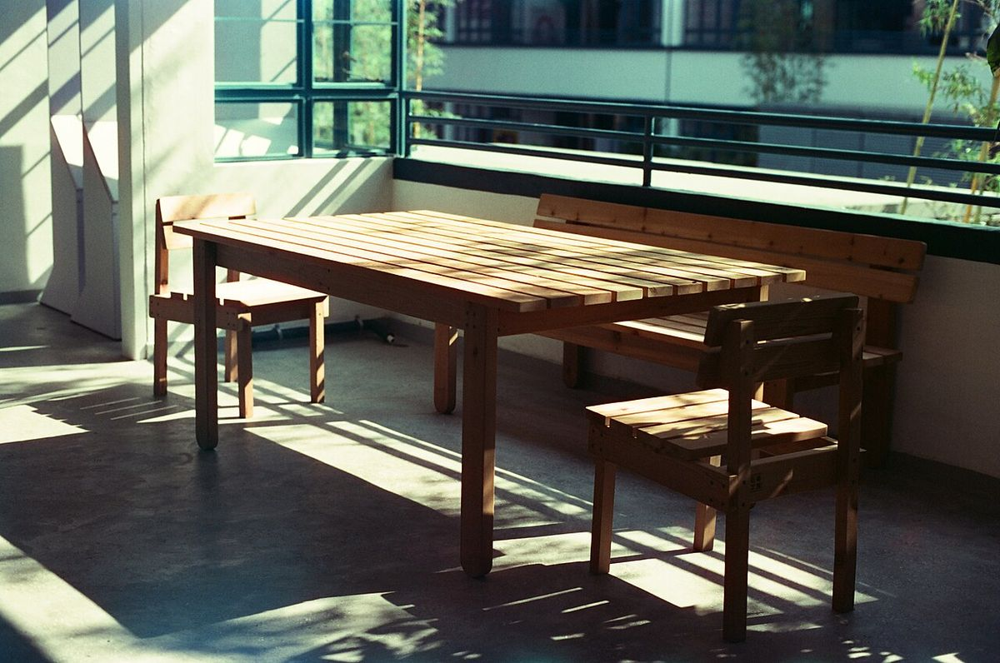
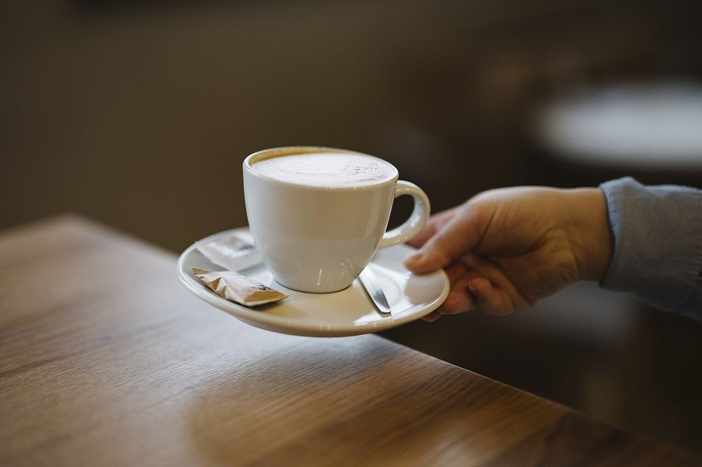
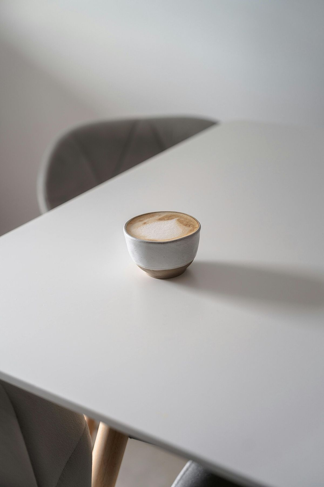
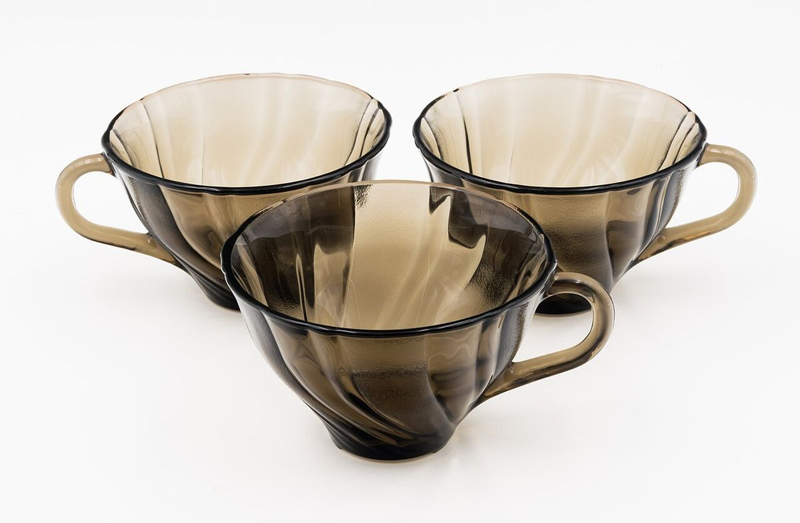
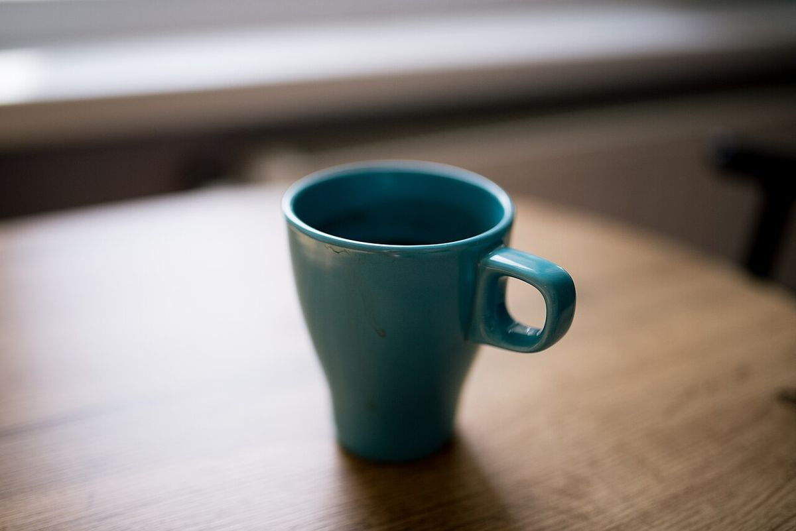

内川カフェ
NO.01
ひと息つく場所に、静かな余白を。
※コンセプト「白と墨の、静かな一杯」は制作側の案です。

いそがしい日の途中に、
静かな一杯を置く時間を。




営業のご案内
| 営業時間 | 準備中(お問い合わせください) |
|---|---|
| 定休日 | 準備中(お問い合わせください) |
掲載写真はフリー素材のイメージで、店舗の実際の様子ではありません。他地域で撮影されたものや撮影地が不明なものを含みます。
ひと息つく場所に、静かな余白を。
※コンセプト「白と墨の、静かな一杯」は制作側の案です。

いそがしい日の途中に、
静かな一杯を置く時間を。




| 営業時間 | 準備中(お問い合わせください) |
|---|---|
| 定休日 | 準備中(お問い合わせください) |